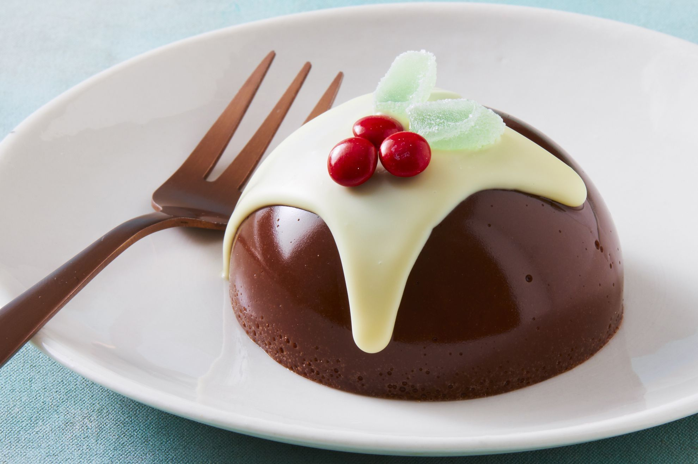

| (Recipe of meatballs)These Spanish-style meatballs will impress all the family and are perfect to prepare ahead and freeze. This tasty chorizo meatballs and risoni recipe makes the perfect cozy weeknight dinner. These easy pork mince meatballs are loaded with the flavours of traditional stuffing. Covered in a sticky maple sauce, they're quick and low-cal, so great for dinner all year 'round. Ah, the classic meatballs - soft and succulent, ready to soak up all the delicious flavours of whichever sauce you choose to pair them with. Let me put you onto this Asian-inspired twist then… A touch of spice and hot honey coats these meatballs with a sticky sweet sauce. Ready in just 30 mins, you can trust me when I say it’s bound to be your new go-to weeknight recipe. While simplicity of this recipe is enticing, that explosive flavour combination of garlicky, spicy sweetness make it a dish that I just keep coming back to. And, to sweeten the deal, it only costs $3.80 a serve! Is this not the perfect dinner? Serve with a cucumber side and steamed rice to give the dish some added freshness and coolness |
|||
ingredients: |
Recipe:
|
|||
Soup: |
Recipe of soup Slow cooked lamb shanks melt off the bone in this fabulous Moroccan-style. Nothing beats a healthy, homemade vegetable soup. This version features quinoa, tomato and peas. Harira is a soup prepared using ingredients like flour, tomatoes, lentils, chickpeas, onions, rice, meat (beef, lamb, or chicken) and olive oil. It is often served as a starter, but it is also consumed as a light snack. |
ingredients:
|
Preparation: In a large Dutch Oven, heat 4 tablespoon extra virgin olive oil over medium heat until shimmering. Add the onions, celery, and carrots. Season with kosher salt. Cook for 5 minutes, stirring regularly until softened. Add the garlic and spices and cook for a couple of 1 to 2 minutes, stirring regularly. Add the crushed tomatoes, tomato paste, cilantro, lentils (both green and red), and chickpeas. Add a dash more kosher salt and cook for 5 minutes, stirring. |
Kebab: |
Recipe of kebab This yummy Middle Eastern recipe brings plenty of flavour into a healthy, and well-rounded chicken meal for lunch or dinner. 15m prep 10m cook 4 servings. Looking for a fuss-free dinner on those busy weeknights? Look no further, these sticky kebabs with gyros salad is a delicious, light dinner for the whole family. |
ingredients:
|
Preparation:
|
| Pudding:  |
Recipe of pudding Addictive, worth a try, without oven, without eggs! delicious Vanilla & Chocolate Pudding. The jellies themselves are made with only dark chocolate, sugar, water and gelatine, so they’re easy to put together. Don’t be fooled by how fancy these treats look. It's as simple as bringing the sugar and water to the boil, then stirring through the chocolate and gelatine until melted (kind of similar to our 1-ingredient chocolate mousse recipe, with the addition of gelatine). |
ingredients:
|
Preparation:
|
Appetizer
 |
Main course
 |
Dessert
 |
Drink
 |
|
Snake
|